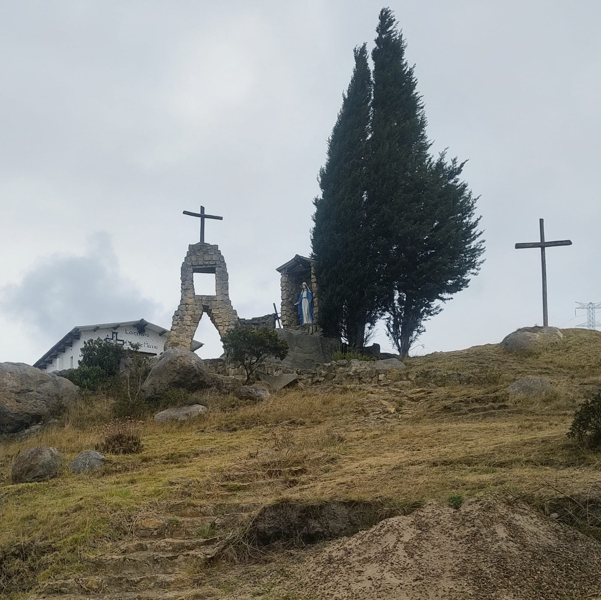
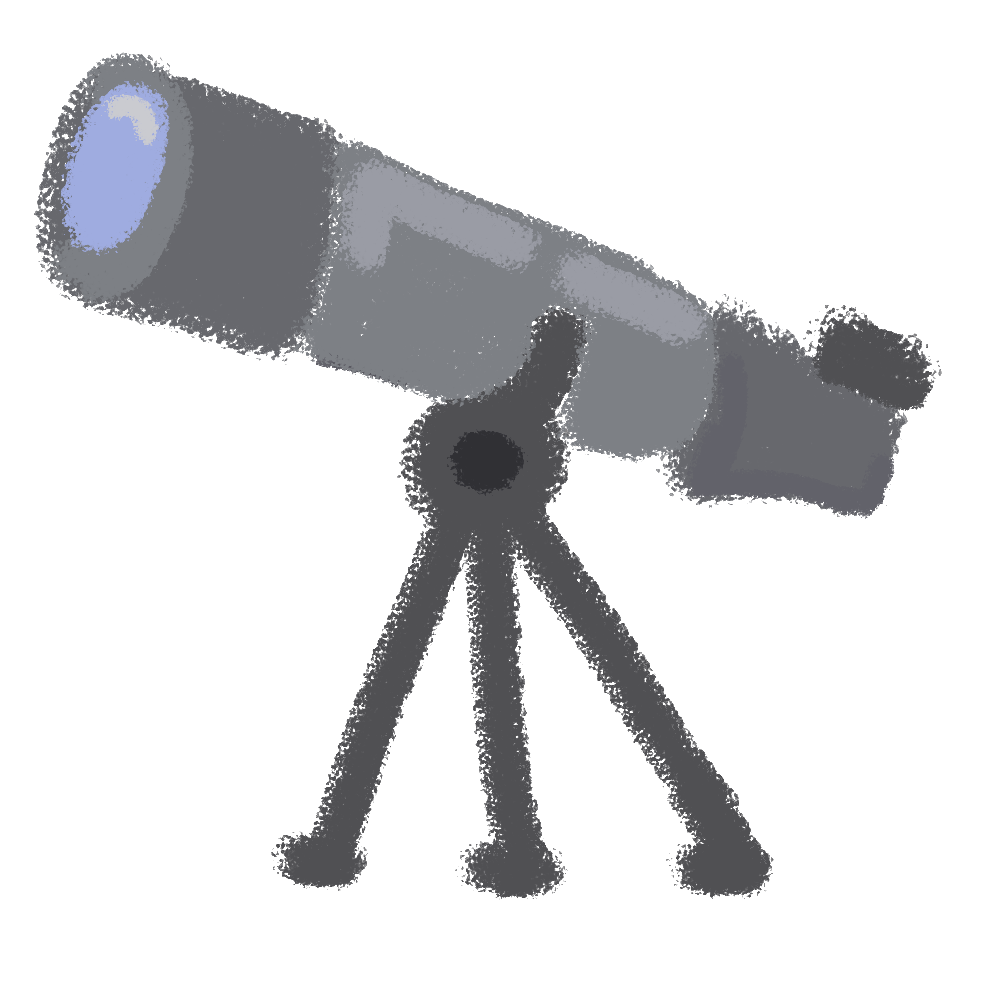
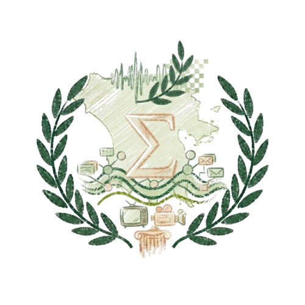
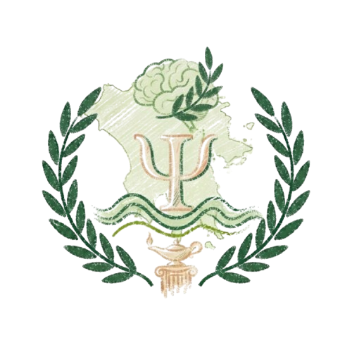
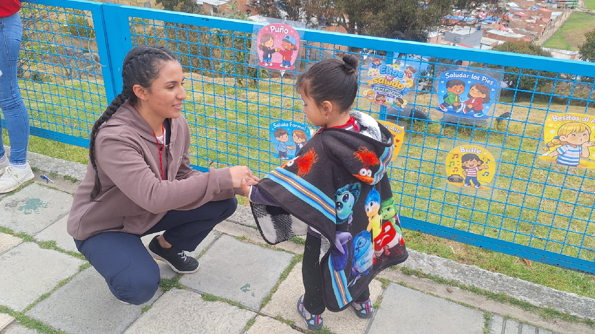
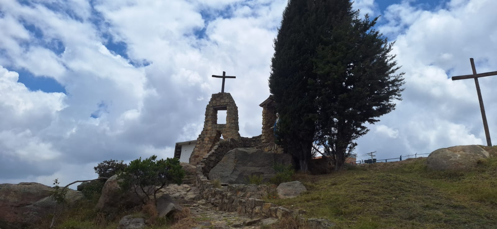
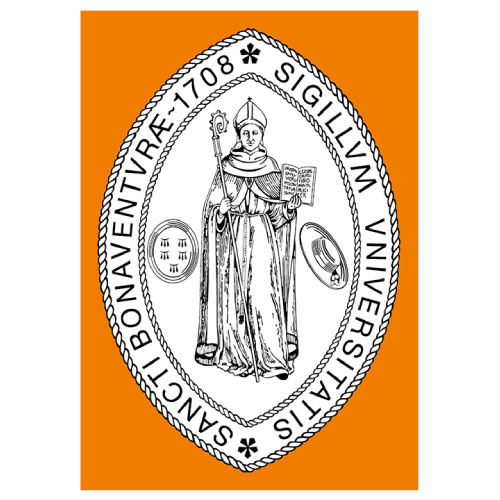
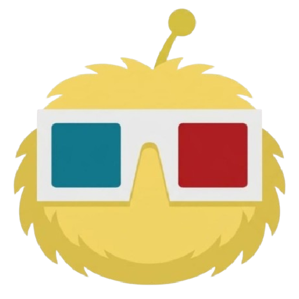

Historias desde la infancia
Descubre cómo los niños cuentan sus propias experiencias y transforman sus recuerdos, emociones e imaginación en historias animadas.
▶ Ver serieUn oasis que protege y eleva. Arte, multimedia y educación para la paz en el corazón de Ciudad Bolívar. La infancia no solo es protegida — es escuchada, fortalecida y protagonista.

Infancia que Resiste nace para fortalecer entornos protectores que permitan a niñas, niños y adolescentes en contextos de vulnerabilidad desarrollarse en espacios seguros, creativos y libres de juicio. Integra educación para la paz, arte y multimedia como herramientas de transformación social en el comedor comunitario Samaritanos del Padre Pío.
Diseñar e implementar una estrategia pedagógica interdisciplinar con enfoque de derechos, que utilice el arte, la creatividad y la multimedia para construir entornos protectores que fomenten la participación, la expresión libre y la educación para la paz en niñas, niños y adolescentes de Ciudad Bolívar.

Para los próximos años, Infancia que Resiste se proyecta como un referente comunitario en la creación de entornos protectores que integren educación, territorio y tecnología. Un modelo replicable donde la multimedia sea el puente entre la memoria del barrio, la participación juvenil y la proyección digital del territorio.
Protegemos el presente, elevamos el futuro.

Da voz y visibilidad a las historias del territorio, convirtiendo la memoria comunitaria en contenido que trasciende y permanece en el tiempo.

Aporta el marco de derechos y protección de la infancia, entendiendo el conflicto y la memoria como base para construir paz en el territorio.
Construye los espacios pedagógicos y culturales donde la niñez aprende, juega y se expresa libremente, sin juicio.

Acompaña el bienestar emocional de niñas y niños, sosteniendo un entorno seguro para procesar sus vivencias y fortalecer su voz.
Un vistazo a las tres fases del proyecto: reconocer, expresar y construir en comunidad.

Mi lugar en el territorio. El primer encuentro para reconocernos, sentir y crear vínculo con el entorno.
Territorio
Pintar lo que sentimos y vivimos. El trazo como lenguaje propio para nombrar la experiencia emocional.
Arte
Compartir para tejer paz. El cierre colectivo donde cada voz aporta al relato común.
PazUn espacio para descubrir el mundo a través de las voces, experiencias e imaginación de los niños y las niñas.
Descubre cómo los niños cuentan sus propias experiencias y transforman sus recuerdos, emociones e imaginación en historias animadas.
▶ Ver serie
Las relaciones familiares, los vínculos afectivos y las experiencias cotidianas se convierten en relatos llenos de sensibilidad y fantasía.
▶ Explorar historias
Cada relato nos acerca a diferentes maneras de sentir, comprender el entorno y compartir las experiencias que hacen única la infancia.
▶ Conocer la serieSeis talleres para que las mujeres cuidadoras del comedor nombren lo que cargan, recuperen su identidad, se cuiden, tejan red y conozcan sus derechos.

Nombrar la carga como primer acto de conciencia. Una silueta corporal para marcar dónde se acumula el peso y una canasta para depositar lo que se quiere soltar.
Cartografía corporal
Autoeficacia parental y modelamiento consciente. Un video, una reflexión sobre lo que ya enseñan y una carta a sus hijos que llega en la Sesión 12 del bloque de infantes.
Aprendizaje vicario
Las cuidadoras como sujetas políticas con derechos. Rutas de atención, una simulación y piedras con palabra propia que viajan a los hogares.
Educación popular
"Este proyecto me permitió descubrir mi voz y compartirla con otros. A través del arte pude contar mi historia sin miedo."
▶ Escuchar
"Gracias al arte pude expresar mis emociones y sentirme acompañada. Encontré una familia en este espacio creativo."
▶ Escuchar
"El proyecto me enseñó que mis experiencias son valiosas. Ahora ayudo a otros niños a encontrar su propia voz."
▶ EscucharExplora las capas geográficas y temáticas del territorio colombiano en tiempo real.

Ciencias Jurídicas y Políticas
Humanidades y Ciencias de la Educación
Humanidades y Ciencias de la Educación
Humanidades y Ciencias de la Educación

Ingeniería en Multimedia
Conoce de cerca las experiencias, aprendizajes y momentos que hacen parte de Infancia que Resiste.

¿Quieres ser parte de Infancia que Resiste? El territorio nos necesita. Juntos construimos entornos protectores donde la infancia pueda florecer.